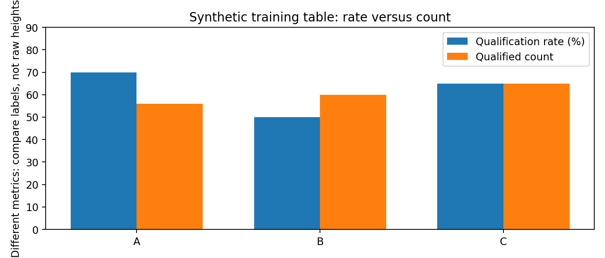
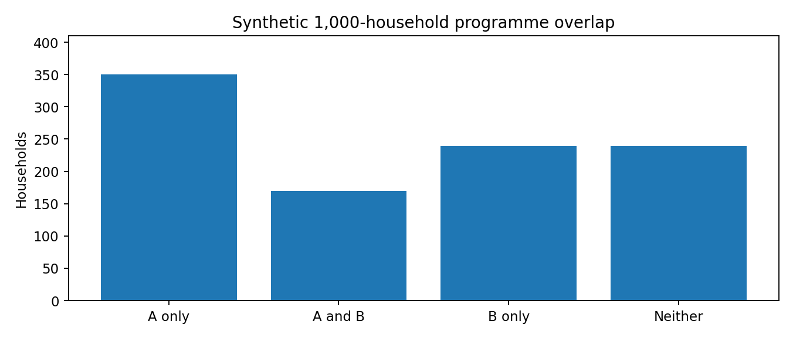
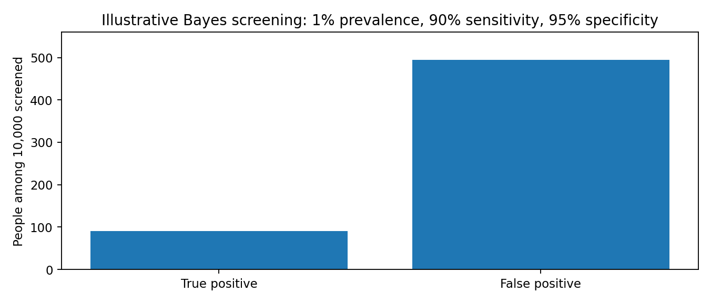

Integrated PDF · Editable master · Preserved original PDF
TGPSC Group I | Paper V | Unit III | Topic 2 | 24 October 2026 | Independent English study draft | NOT academically approved
The commission-hosted Group I syllabus, Paper V, Unit III, item 2 reads: “Problems based on Tabular and Diagrammatical Data - Problems based on Probability Logical Reasoning, Analytical and Mental ability.” [S01–S02]. The wording is directly corroborated by the indexed original commission syllabus, but the original notification's full PDF could not be reopened on 24 October 2026 (HTTP 502). This is a transparent provenance limitation, not permission to alter the syllabus. The Paper V exam pattern describes a 30-question Section III in which candidates answer 25 questions for two marks each [S03]. All practice questions here are original and not labelled official PYQs.
| Syllabus component | Detailed coverage | Assessment evidence |
|---|---|---|
| Tabular and diagrammatical data | Sections 1–5, 17–18 | 10+ worked problems, table-to-chart diagram |
| Probability | Sections 6–9, 17–18 | Counting, conditional probability, Bayes, independent events |
| Logical reasoning | Sections 10–11, 14–15 | Sets, syllogisms, necessity and sufficiency |
| Analytical ability | Sections 3–5, 12–18 | Data quality, scheduling, comparison and inference |
| Mental ability | Sections 12–16 | Directions, ranking, patterns and error control |
Interpretation rule: Every invented dataset is explicitly illustrative. Do not cite its numerical values as Telangana administrative statistics. The one dated DES rainfall observation is separately attributed and time-stamped.
The common discipline linking tabular data, probability and reasoning is to make assumptions visible. Read a table as a defined population and denominator; translate diagrams into measurable quantities; define the random experiment before calculating probability; test logical conclusions with counterexamples; and audit the final answer against units, bounds and real-world context. Telangana's official statistical systems provide useful applications, but a synthetic teaching dataset must never be presented as official data.
A statistical table is a compact model of a question, not merely a rectangle of numbers. Its title identifies the subject; the population and geographic coverage identify what is being counted; the reference period identifies when; and the unit specifies whether a cell is persons, hectares, rupees, percentages or an index. Before calculating anything, translate each row and column into a sentence. A row labelled “Nalgonda” and a column labelled “2025–26” may refer to a district-year observation; a row labelled “rural” and a column labelled “female” may instead refer to a two-way classification. The same visual grid can represent fundamentally different statistical objects.
A sound first pass follows a fixed order: inspect the heading, read the source and notes, identify row totals and column totals, inspect missing or suppressed cells, establish the denominator and only then compute. Totals are often useful checks but not necessarily sums: a “rate” row must usually be recomputed from its underlying numerator and denominator, not obtained by adding the rates above it. For example, 20 of 40 households and 90 of 100 households have access to tap water in two mandals. The combined coverage is 110/140 = 78.57%, not the arithmetic mean of 50% and 90%, which is 70%.
Tables can be arranged as time series, cross-sections, contingency tables, frequency distributions or transition matrices. Time-series observations must be aligned by comparable dates; cross-sectional observations must share definitions; contingency tables require explicit joint and marginal counts. A transition matrix records movements between states, such as “enrolled last year” and “enrolled this year,” and cannot be interpreted as a simple headcount without understanding flows. A district boundary change can create a discontinuity in a series even when the underlying population has not changed. This is especially important when comparing historical Telangana administrative records with current districts.
Worked example (illustrative, not government data): A training centre reports 48 applicants from Hyderabad, 32 from Medak and 20 from Nirmal. Of these, 24, 8 and 10 respectively were selected. Total applicants = 100, total selected = 42. Selection rates are 50%, 25% and 50%; the centre-wide selection rate is 42%. The largest absolute number of selected applicants is Hyderabad's 24, but Hyderabad and Nirmal tie on selection rate. The correct conclusion depends on whether the question asks for count or conditional proportion. Always distinguish a district's share of all selections from the probability of selection conditional on applying from that district.
In a two-way table, a cell at row i and column j is x(i,j). The row total is the sum across columns, the column total is the sum across rows, and the grand total is the sum of either all row totals or all column totals. The two grand totals must agree when every cell is a mutually exclusive count and there are no duplicated records. This equality is a powerful audit rule. A row percentage divides a cell by its row total; a column percentage divides by its column total; a table percentage divides by the grand total. These answer different questions even when their numerators are identical.
Consider a hypothetical health-camp table: women screened: urban 80, rural 120; men screened: urban 60, rural 90. The row total for women is 200 and for men 150; the urban column total is 140 and rural 210; grand total 350. Women constitute 80/140 = 57.14% of the urban group, while 80/200 = 40% of screened women came from urban areas. The first is P(woman | urban); the second is P(urban | woman). Exchanging these conditional statements is a frequent error in aptitude questions and real programme evaluations.
Missing entries can be recovered only if the available totals supply enough independent equations. Suppose a four-cell table has values a, 12 in the first row and 9, b in the second row, with row totals 30 and 25. Then a = 18 and b = 16. If only the grand total of 55 were supplied, infinitely many (a,b) pairs satisfying a+b = 34 would fit. An underdetermined problem should be identified as such rather than solved by guessing a pattern. For tables with overlapping categories, adding totals can double-count individuals: beneficiaries receiving both pensions and scholarships may appear in two columns. A unique-person count requires deduplication or inclusion–exclusion.
For any multi-step table problem, write a miniature audit trail: observed values, target numerator, target denominator, formula, arithmetic and a final unit-bearing sentence. If the target is “percentage increase in rural completions,” the denominator is the earlier rural completion count, not the total completions in the latest year. The phrase “percentage of the total” demands a different denominator. This deliberate parsing is more reliable than memorising a single percentage formula.
Percentages compress different quantities onto a common scale, but they do not erase denominators. If 10 out of 20 cases are resolved in one office and 80 out of 100 in another, the combined rate is 90/120 = 75%. An unweighted average of 50% and 80% gives 65%, which is wrong for the pooled caseload. The general formula is pooled rate = (sum of successes)/(sum of eligible observations). Equivalently, the pooled rate is a weighted mean of group rates, with group denominators as weights.
A ratio a:b compares two quantities; a proportion a/(a+b) compares one part with the combined whole. If male:female applicants = 3:2, the female share is 2/5 = 40%, not 2/3. When a ratio is scaled, both terms must be scaled by the same factor. A statement that an office's workload increased by 20% and then decreased by 20% does not imply return to baseline: 100 becomes 120 and then 96. The net change is -4%. For successive growth rates r and s, multiply factors (1+r)(1+s), with rates expressed as decimals.
Simpson's paradox can reverse a pooled comparison when groups have very different case mixes. In this entirely hypothetical teaching example, Hospital A treats 90 low-risk patients with 81 recoveries (90%) and 10 high-risk patients with 5 recoveries (50%): pooled recovery = (81+5)/(90+10) = 86/100 = 86%. Hospital B treats 10 low-risk patients with 10 recoveries (100%) and 90 high-risk patients with 54 recoveries (60%): pooled recovery = (10+54)/(10+90) = 64/100 = 64%. Hospital B has a strictly higher observed recovery rate in both risk strata (100% > 90%; 60% > 50%), yet Hospital A has the higher pooled rate (86% > 64%). The reversal arises because A treated mostly low-risk patients while B treated mostly high-risk patients; the pooled denominators weight the strata differently. Do not infer that B's treatment causes better outcomes: subgroup sizes, selection effects, sampling variability and unmeasured confounding still matter. A fairer descriptive comparison reports both strata or uses a transparently chosen common risk distribution.
Telangana application: comparing mandal-level service performance requires a clear base. A mandal with 900 resolved applications out of 1,000 can outperform a mandal with 95 out of 100 in absolute resolutions but underperform in resolution rate (90% versus 95%). Both statements are true. The exam often tests the ability to state which metric answers which question. A policy conclusion should disclose the measure, not just label a mandal “best.”
A diagram may encode data by length, area, angle, colour, position, density or flow. Reading it correctly requires knowing the encoding. A bar's height represents a quantity on its scale; the area of a circle can represent a count only if the designer explicitly used area proportional to count. A flow diagram may represent transitions, not stock. A Venn diagram represents set membership and overlap. A network diagram represents relationships and cannot be converted into frequencies merely by counting line intersections.
In bar diagrams, compare bars only after checking that the baseline and axis increments are consistent. A truncated vertical axis can exaggerate a small difference: 95 and 100 look five times apart if the plot starts at 94, but differ by only about 5.26% relative to 95. In a stacked bar, the top of the second segment represents the cumulative total, not the second segment alone. The second segment's value equals its upper boundary minus its lower boundary. In grouped bars, legend colours must be matched carefully before subtracting across years.
Pie diagrams encode shares as angles: sector angle = (category/total) × 360 degrees. A 72-degree sector represents 20% of the whole, but the underlying count cannot be recovered without the total. Comparing sector angles between pies of unequal total size can be misleading: a 30% share of 500 (150) exceeds a 40% share of 300 (120). A schematic icon array may also use “one icon = 5 households,” making half-icons ambiguous unless the legend explains them.
Diagrammatic reasoning is often a translation exercise. Replace the picture with a table or equations, then solve. If a diagram shows a road from A to B with a detour through C, distances should be read from labelled edges, not from apparent drawing length unless drawn to scale. If a circular seating puzzle says “clockwise,” draw arrows and fix one person at the top to eliminate rotational symmetry. These techniques reduce visual intuition errors and make the final answer independently checkable.
A frequency table records how many observations fall into categories or numerical classes. For ungrouped values, the frequency f(x) counts repetitions; relative frequency is f(x)/N. A cumulative frequency table adds frequencies up to a boundary and answers “at most” or “less than” questions. In grouped data, a class such as 10–19 is not identical to 10–20: class boundaries and endpoint conventions matter. If class intervals overlap, a value may be counted twice. In continuous data, use non-overlapping boundaries, for example [10,20), [20,30), [30,40).
Consider illustrative household monthly water-use bins: 0–10 units: 8 households; 10–20: 14; 20–30: 18; 30–40: 10. Total N = 50. Cumulative frequencies are 8, 22, 40 and 50. Hence 40/50 = 80% are below 30 units, under the stated upper-exclusive convention. The median observation lies around the 25th/26th position, in the 20–30 class. Without individual values, an exact median cannot be known; interpolation under an assumed within-class distribution gives an estimate, not an observed exact value.
A histogram differs from a bar chart: adjacent bars represent contiguous numerical intervals. If widths differ, frequency density, not raw height, should determine area: density = frequency/class width. A wide interval with more observations may have a lower density than a narrow interval. A frequency polygon connects class-midpoint densities or frequencies under a specified construction; it does not reveal individual observations. A cumulative-frequency curve can estimate quantiles but inherits grouping error.
Distribution shape matters for inference. A right-skewed income distribution typically has a mean pulled above the median; a symmetrical distribution may have similar mean and median; outliers can distort mean without changing the middle rank much. “Most households are below the average” can be true in a right-skewed distribution. Neither an average nor a frequency chart alone reveals the experiences of vulnerable subgroups. An administrative analyst should inspect tails and stratified patterns before drawing policy conclusions.
Probability is a numerical description of uncertainty under a stated model. A sample space Ω lists all possible elementary outcomes; an event A is a subset of Ω. A probability measure assigns non-negative values, P(Ω)=1, and additive probabilities for disjoint events. For finite equally likely outcomes, P(A)=number of favourable outcomes divided by number of outcomes. The phrase “equally likely” is an assumption, not a universal fact. An unbiased six-sided die has six equiprobable faces in the idealised model; administrative events such as flood warnings or application approvals generally do not.
The complement rule P(not A)=1−P(A) is especially useful for “at least one” questions. With two independent fair coin tosses, the chance of at least one head is 1−P(no heads)=1−(1/2)^2=3/4. Direct enumeration HH, HT, TH, TT confirms three favourable outcomes. With three tosses, exactly two heads occur in C(3,2)=3 of 2^3=8 equally likely sequences, so P=3/8. A common mistake is to count two heads as one arrangement and ignore order.
The union rule is P(A∪B)=P(A)+P(B)−P(A∩B). If 60% of trainees know spreadsheets, 50% know presentation software and 30% know both, 80% know at least one. Adding 60% and 50% without subtracting overlap yields an impossible 110%. The event “neither” is the complement, 20%. If A and B are disjoint, the intersection is zero; if independent, the intersection equals P(A)P(B). Disjoint and independent are different properties: two nonempty disjoint events cannot be independent because their intersection probability is zero while the product of positive probabilities is not.
Probability calculations are conditional on how an experiment is sampled. Selecting one household uniformly from all households differs from selecting one mandal uniformly and then one household within that mandal; the latter overweights small mandals. In examination problems, specify whether cards, balls, people or districts are selected with equal probability and whether replacement occurs. If the wording is insufficient, a unique numerical answer may not be justified.
Probability problems often reduce to counting the sample space correctly. The multiplication principle states that if a first decision has m choices and, for each, a second has n choices, there are mn ordered outcomes. For example, three letter choices followed by four digit choices produce 12 codes, provided every letter can pair with every digit. The addition principle applies to mutually exclusive alternatives: choosing one of three bus routes or one of two rail routes gives five route options if the choices are distinct and the question asks for a single route.
A permutation counts arrangements in which order matters: nPr = n!/(n−r)!. A combination counts selections in which order does not matter: nCr = n!/[r!(n−r)!]. Selecting a chairperson and secretary from five candidates yields 5×4=20 assignments; selecting a two-person committee yields C(5,2)=10. Treating a committee as an arrangement doubles the count for each unordered pair. For repeated objects, divide by factorials of identical counts: the letters of LEVEL have 5!/(2!2!)=30 distinct permutations.
The number of subsets of an n-element set is 2^n, including the empty set. The number of ways to select at least one member is 2^n−1. These formulas assume distinguishable members and no additional restrictions. With restrictions, subtract forbidden cases or count valid cases directly. For example, selecting two of six volunteers when two named volunteers cannot serve together yields C(6,2)−1=14 committees.
In “without replacement” draws, probabilities change after each draw. A bag with three red and two blue balls yields P(two reds)=(3/5)(2/4)=3/10. The combination approach C(3,2)/C(5,2)=3/10 agrees. With replacement, P(two reds)=(3/5)^2=9/25. This comparison illustrates why a diagram of sequential branches can prevent errors: each branch must carry the correct conditional denominator. Counting methods are tools for transparent reasoning, not shortcuts that override the experiment description.
Conditional probability P(A|B)=P(A∩B)/P(B) restricts the sample space to B, assuming P(B)>0. It is not generally equal to P(B|A). Consider an illustrative scholarship table: 100 applicants are from rural areas, of whom 40 qualify; 200 are urban, of whom 100 qualify. Then P(qualify|rural)=40/100=40%, while P(rural|qualify)=40/140≈28.57%. Confusing the two answers is a denominator error, not a minor arithmetic slip.
The law of total probability partitions a population into mutually exclusive exhaustive groups. If 30% of applications are urgent and 70% routine, with error rates 10% and 2%, then P(error)=0.30×0.10+0.70×0.02=0.044, or 4.4%. Bayes rule reverses a condition: P(urgent|error)=P(error|urgent)P(urgent)/P(error)=0.03/0.044≈68.18%. Thus even though urgent applications form only 30% of all applications, they account for over two-thirds of errors under this illustrative model.
Base-rate neglect appears in screening. Imagine a condition with 1% prevalence, a test with 90% sensitivity and 95% specificity. In 10,000 people, expect 100 affected: 90 true positives and 10 false negatives. Of 9,900 unaffected, 495 false positives and 9,405 true negatives. Among 585 positive results, only 90/585≈15.38% are true positives. A “90% sensitive” test does not imply 90% probability of disease after a positive result. These are model-based expected counts, not medical advice or real screening statistics.
A tree diagram is an effective representation: begin with prior groups, branch into outcomes, multiply along each path and add mutually exclusive paths. Check that terminal path probabilities sum to one. Independence is a special case in which P(A|B)=P(A), not a default assumption. Policy interpretation should disclose prior rates, test characteristics, uncertainty and population differences before drawing conclusions.
Two events are independent if knowledge of one does not change the probability of the other. Formally, P(A∩B)=P(A)P(B). Mutual exclusivity instead means A and B cannot occur together. For positive-probability events, they cannot be both independent and mutually exclusive. If a randomly chosen student is in class X, they cannot simultaneously be in class XI under a single-grade classification; these grade events are disjoint, not independent.
Repeated coin tosses are independent in the ideal fair-coin model; successive draws without replacement are generally dependent. In a group with four women and six men, P(two women without replacement)=(4/10)(3/9)=2/15. With replacement it would be (4/10)^2=4/25. The event “second person is a woman” has marginal probability 4/10 by symmetry in a random ordering, but its conditional probability changes after learning the first selection. Marginal equality does not make the draws independent.
The probability of at least one success in n independent identical trials with success probability p is 1−(1−p)^n. With p=0.2 and n=3, it is 1−0.8^3=0.488. The binomial probability of exactly k successes is C(n,k)p^k(1−p)^(n−k), under independent identical Bernoulli trials. If weather conditions cause correlated failures, the binomial assumption can be invalid; treating correlated incidents as independent may badly underestimate the chance of clustered outcomes.
Sampling design changes what can be inferred. A sample of households within one village does not automatically represent a district; cluster effects and unequal selection probabilities require appropriate weights and uncertainty estimates. MoSPI's survey methodology explicitly describes multi-stage stratification and design-based weighting [S07, S08]. In an examination solution, state the assumption of random, independent selection when required. In an administrative report, also assess whether that assumption is defensible. A precise calculation under a false assumption is not a sound conclusion.
A Venn diagram visualises overlap among sets, but numbers should be allocated from the most constrained intersections outward. For two sets, |A∪B|=|A|+|B|−|A∩B|. If 70 students study mathematics, 60 study science and 25 study both, 105 study at least one. If there are 120 students, 15 study neither. The “only mathematics” region is 45 and “only science” is 35. These four disjoint regions 45,25,35,15 sum to 120 and provide an internal check.
For three sets, inclusion–exclusion is |A∪B∪C|=|A|+|B|+|C|−|A∩B|−|A∩C|−|B∩C|+|A∩B∩C|. Pairwise intersection counts typically include the triple intersection unless the question explicitly says “only.” Example: A=40, B=35, C=30, pairwise AB=15, AC=12, BC=10 and all three=5. The union is 40+35+30−15−12−10+5=73. If the population has 80, seven belong to none. Starting with the central triple region of five and then assigning pairwise-only regions 10,7,5 prevents double subtraction.
Venn diagrams can also test categorical statements: “all nurses are health workers” means the nurses set is contained in the health-worker set; “some health workers are volunteers” means the sets overlap but does not imply all nurses volunteer. A diagram representing a possible arrangement is not proof that a conclusion follows in every valid arrangement. To test logical entailment, construct a counterexample that satisfies all premises but violates the conclusion. If one exists, the conclusion is not forced.
Real beneficiary lists may overlap across programmes. A district administrator counting unique households receiving either irrigation or livestock assistance should subtract the overlap; otherwise programme reach is inflated. However, overlap may be beneficial and does not by itself establish duplication of payments. Set reasoning provides correct arithmetic; audit and legal context determine whether the overlap is problematic.
A syllogism draws a conclusion from premises involving categories. Translate verbal claims into quantified statements: “all A are B” means A⊆B; “no A are B” means A∩B=∅; “some A are B” means the intersection is nonempty; “some A are not B” asserts at least one element in A outside B. Ordinary-language “some” does not mean “some but not all” in formal logic unless explicitly defined that way. It only asserts existence.
From “all engineers are graduates” and “all graduates are literate,” it follows that all engineers are literate. The reverse “all literate persons are engineers” does not follow. From “some doctors are researchers” and “all researchers are trained,” it follows that some doctors are trained. From “all A are B” and “some B are C,” one cannot conclude that any A are C: the B∩C members could lie outside A. Draw the minimum counterexample to test the tempting but invalid inference.
Statements of the form “if P then Q” permit modus ponens (P, therefore Q) and modus tollens (not Q, therefore not P). They do not permit affirming the consequent (Q, therefore P) or denying the antecedent (not P, therefore not Q). “If a road is flooded, it is closed” does not mean that every closed road is flooded; repairs can also cause closure. Conversely, if a road is not closed and the rule is universal and operative, it cannot be flooded under that premise.
An argument's validity concerns whether its conclusion necessarily follows from premises, not whether premises are factually true. A valid argument can start from false premises. In public administration, distinguish evidence that a scheme was implemented from evidence that it caused an outcome. Correlation, plausible mechanism and temporal order can support a hypothesis, but they are not deductive proof. Questions that ask “which conclusion necessarily follows?” require logical entailment, not what sounds probable or socially desirable.
Seating puzzles are constraint-satisfaction problems. Assign symbolic positions before attaching names. In a row of five seats, number positions 1 through 5 from left to right; for a circular arrangement, anchor one named person at a fixed point because rotating everyone together does not change relative positions. When facing north, a person's left corresponds to the diagram's left; when facing south, it reverses. In a circle, “left” and “right” depend on whether people face the centre or outward. State this convention at the beginning.
Example: Five officials A, B, C, D and E sit in a row facing north. C occupies the centre. A is immediately left of C. E sits at the right end. B is not adjacent to E. Positions 2,3,5 are A,C,E. Remaining positions 1 and 4 go to B and D; B cannot be at 4 because it is adjacent to E at 5, so B=1 and D=4. The order is B-A-C-D-E. This solution uses elimination, not guesswork. If a puzzle has multiple satisfying arrangements, a requested specific person's position may be indeterminate.
For directions, take east as positive x and north as positive y. A person walks 3 km east and 4 km north: displacement from start is sqrt(3²+4²)=5 km northeast, not 7 km. Total distance travelled is 7 km. A left turn changes heading by 90 degrees relative to current orientation; it does not always mean “west.” Keep a heading arrow after each move. For a square grid, use coordinates to check final position and net displacement.
Spatial reasoning also includes folded-paper, mirror-image and rotation questions. A mirror reverses orientation across the mirror axis; rotation preserves handedness. A diagram that looks similar under rotation may not be identical under reflection. When the task requires an unambiguous solution, explicitly state symmetry and orientation assumptions. These habits are useful in interpreting maps, evacuation routes and schematic layouts, not only aptitude examinations.
A number sequence may follow arithmetic, geometric, alternating, recursive or digit-based rules. Start by examining first differences; if they are constant, an arithmetic pattern is plausible. If second differences are constant, a quadratic pattern is plausible. Ratios suggest a geometric pattern, but ratios can be unstable around zero. An alternating sequence should be separated into odd and even positions before imposing a single formula. Example: 3, 7, 13, 21, 31 has differences 4,6,8,10, so the next difference is 12 and the next term 43 under the natural quadratic continuation.
However, finitely many observed terms never uniquely determine an unrestricted next term. One can construct infinitely many polynomials agreeing with a finite prefix and giving different next values. Aptitude problems rely on a convention that a simple rule is intended. The defensible answer states the assumed rule. If two comparably simple patterns fit, the question may be ambiguous. An explanation should never claim mathematical necessity when it merely identifies the expected puzzle convention.
Letter sequences can be mapped A=1 to Z=26, but wraparound and skipped letters must be specified. For example, B, E, H, K advances by three positions, so N is a plausible next letter. Alphabet position is a tool, not a guarantee: an alternative might use word initials or phonetic properties. In coding-decoding questions, check whether a shift applies uniformly to every character and whether spaces or repeated letters are treated consistently.
A “wrong term” problem is often solved by finding a single rule that fits all but one term, then checking the proposed correction against the whole sequence. Do not correct a term solely because it looks unfamiliar. In administrative data, the same warning becomes substantive: an outlier may be a valid observation, a change in definition or a transcription error. Pattern detection suggests a verification question; it does not justify altering records without evidence.
Ranking questions translate verbal positions into arithmetic. If a candidate ranks r from the top and s from the bottom in a single ordered list with no ties, total participants N=r+s−1. A student who is 12th from the top and 19th from the bottom belongs to a group of 30. Subtract one because the same student is counted in both directions. With ties or absent candidates, this formula requires adjustment; the question must state the ranking convention.
For comparisons, write an ordering chain. “A is taller than B; C is shorter than B; D is taller than A” yields D>A>B>C. “E is taller than C” alone does not place E uniquely relative to B, A or D. An exam item that asks for the second tallest must provide enough constraints. When a puzzle includes conditional alternatives, create a small table of candidate arrangements and cross out violations. This is more reliable than mentally juggling many names.
A scheduling problem can be represented by a constraint graph. Suppose three meetings X, Y and Z must be assigned to Monday, Tuesday and Wednesday; X precedes Z, Y is not Monday and Z is not Tuesday. If X=Monday, Z=Wednesday, Y=Tuesday is a solution. If X=Tuesday, Z must be Wednesday and Y would be Monday, violating the rule; therefore the first arrangement is unique. Explicitly testing the other branch demonstrates completeness rather than merely presenting one plausible schedule.
The distinction between necessary and possible conclusions is essential. “Which day must meeting Y occur?” asks for an invariant across all valid schedules. “Which arrangement could be correct?” asks only for one satisfying arrangement. Many wrong answers arise from proving possibility when necessity was requested. A short candidate table with check marks for every premise is often the fastest robust solution.
Data-sufficiency questions test whether information is enough to determine an answer, not whether the answer can be guessed. For a numeric target, a statement is sufficient if it yields one unique value under the given assumptions. If the question asks for a yes/no conclusion, a statement is sufficient if it determines a definite yes or a definite no; one does not need to calculate a numerical quantity. Test each statement independently before combining them, or information from the first may contaminate the assessment of the second.
Example: “What is x?” Statement I: x+y=10. Statement II: x−y=2. Neither alone determines x; together, adding gives 2x=12, so x=6. If the question instead asks “Is x positive?” and Statement I says x>3, Statement I alone is sufficient. In a geometric problem, knowing a rectangle's area and perimeter can determine side lengths up to interchange, but not which side is called length unless that convention is supplied.
Critical reasoning separates claim, evidence, warrant and assumption. A claim that a village's school attendance improved after a new bus route is compatible with the route helping, but also with simultaneous scholarships or changes in school records. A stronger evaluation compares relevant counterfactuals, baseline trends and possible confounders. “What would weaken the argument?” asks for evidence reducing the inference's credibility, not merely a fact unrelated to the topic. “What assumption is required?” asks what must be true for the reasoning to work.
In public-sector dashboards, beware survivorship bias, ecological fallacy and selection bias. A district-level average cannot be assigned to every household; a survey of online applicants may exclude households without internet; reporting only successfully completed cases omits failures. The reasoning discipline is to specify population, selection mechanism, comparison group, causal claim and missing evidence. A high-quality mains response can acknowledge uncertainty while still recommending concrete data collection and evaluation steps.
Mental ability encompasses working memory, rule discovery, numerical flexibility, classification and rapid but justified inference. A good exam strategy begins with representation: convert a word problem into a small table, draw a Venn diagram for overlaps, sketch a tree for sequential probability, and use a grid for ordering constraints. This reduces working-memory burden and creates visible checkpoints. Speed comes from choosing the right representation, not skipping logic.
Approximation is valuable for screening options. If 199 out of 401 applications were approved, the rate is close to 200/400=50%, so an option near 5% or 95% is implausible. But approximation should not replace exact calculation when options are close. Fractions can be compared by cross-multiplication: 7/12 versus 3/5 compares 35 and 36, so 7/12 is smaller. Units should be carried through: 30 km/h for 2 hours yields 60 km, not 60 km/h. The difference between percentage and percentage points should be preserved even under time pressure.
A reliable four-step audit for MCQs is: identify what is asked; identify the denominator or condition; compute by an independent second method where feasible; check whether the result satisfies the story. In probability, ensure the answer lies between zero and one. In counting, ensure the favourable count does not exceed the sample space. In Venn diagrams, ensure every disjoint region is non-negative and sums to the stated population. In ranking, ensure the implied total is at least as large as either rank.
Exam practice should mix direct computation with counterexample questions. Candidates often memorise the formula P(A|B) but still confuse it with P(B|A); they may memorise N=r+s−1 but fail when ties are allowed. After each error, record whether it was a misread, model error, algebra error, arithmetic error or unsupported inference. Review by error type, not only by chapter. This produces transferable competence across unseen questions rather than fragile familiarity with one set of exercises.
Case A — rainfall interpretation. On 24 October 2026 the Telangana Directorate of Economics and Statistics dashboard displayed cumulative state rainfall from 1 June to 24 October of 619.0 mm against a normal of 819.3 mm, with a displayed deviation of −24% [S04]. Recalculation gives (619.0−819.3)/819.3×100≈−24.45%, consistent with a rounded −24% dashboard label. This is an operational time-stamped observation, not a forecast and not evidence that every mandal experienced the same deficit. Rainfall can vary sharply within a district; spatial aggregation can hide extremes. A proper district-level response requires mandal-level distribution, crop stage and reservoir conditions.
Case B — district handbook comparison. The Telangana DES describes district handbooks containing mandal-wise statistics compiled by Chief Planning Officers and reviewed before publication [S06]. Suppose an illustrative handbook lists primary-school enrolment in two mandals: 1,200 of 1,500 eligible children in Mandal A and 720 of 800 in Mandal B. A has more enrolled children (1,200 versus 720), but B has a higher coverage rate (90% versus 80%). If eligible populations are estimates from different years, direct comparison needs a caveat. A bar chart of raw enrolment and a table of coverage rates answer complementary questions.
Case C — survey inference. The National Statistical Office's documented multi-stage stratified sampling and design weights [S07, S08] mean that 50 sampled enterprises do not automatically represent 50 equally weighted establishments. If one sampled unit represents 100 similar enterprises and another represents 10, an unweighted mean can misrepresent the sector. The appropriate estimator and relative standard error depend on the sample design. In a mains answer, the defensible conclusion is that probability models must be tied to the survey's selection mechanism.
Case D — programme overlap. Consider 1,000 illustrative rural households: 520 received crop advisory, 410 received livestock advisory and 170 received both. The unique reach is 520+410−170=760 households; 240 received neither. Among advisory recipients, the share receiving both is 170/760≈22.37%. If a report merely adds 520 and 410, it exaggerates unique reach by 170. Yet receiving both services may be intentional; an audit should distinguish duplicate counting from valid multi-service delivery. Privacy-sensitive linking of person-level records should be assessed against the applicable legal and governance framework, including the Digital Personal Data Protection Act, 2023 and its notified commencement provisions [S09].
A high-scoring answer connects a mathematical method to a justified conclusion. For a tabular-data question, state the target metric and denominator; for a diagram, translate shapes into counts or constraints; for probability, state the sample space and independence assumptions; for logic, test whether the conclusion follows in every possible model. Then provide the calculation, interpret the number and flag material limitations. This order works in short objective questions and in structured 10-mark mains responses.
Consider a synthetic district-training dataset: 80 applicants from Group A with 56 qualifying, 120 from Group B with 60 qualifying, and 100 from Group C with 65 qualifying. Total 300 applicants and 181 qualifiers, pooled rate 60.33%. Group rates are 70%, 50% and 65%. A has the highest rate but C has the largest absolute number of qualifiers (65). The probability a randomly chosen qualifier belongs to C is 65/181≈35.91%; the probability an applicant from C qualifies is 65/100=65%. Both are meaningful, but they answer different conditional questions.
Now suppose one trainee is selected uniformly from all 300 applicants and another independently with replacement. The probability both are from A is (80/300)^2≈7.11%. Without replacement it is (80/300)(79/299)≈7.05%. If the trainee-selection process is stratified, neither formula necessarily applies. An administrative report that quotes a probability without explaining selection rules may be precise but invalid. This is the central lesson linking tables, probability and logical inference.
Finally, separate original examination practice from authenticated previous-year questions. The 30 MCQs below are newly written learning exercises; none is labelled an official TGPSC PYQ. The six model answers are complete instructional responses with headings and conclusions. The source register documents institutional claims and dated public data; mathematical identities are demonstrated through calculations. This chapter remains an independent draft requiring subject-matter audit and numerical proofreading before academic approval.
Problem (illustrative): A table lists rural trainees 40 in A and 60 in B; urban trainees 35 in A and x in B. The B column total is 105. Find x and the grand total.
Solution and check: x=105−60=45. Grand total=40+60+35+45=180. Check row totals: rural 100, urban 80; 100+80=180. The result is a count, not a percentage.
Problem (illustrative): District A resolves 60 of 80 applications; district B resolves 90 of 120. Find pooled resolution rate.
Solution and check: Total resolved=150, total filed=200; pooled rate=150/200=75%. Both district rates are also 75%, but equality is incidental; always pool numerator and denominator.
Problem (illustrative): An indicator increases from 40% to 50%. Express both kinds of change.
Solution and check: Percentage-point increase=50−40=10 points. Relative increase=(50−40)/40×100=25%. These measures must not be interchanged.
Problem (illustrative): A 54-degree pie sector represents a category in a sample of 800. Find its count.
Solution and check: Share=54/360=0.15; count=800×0.15=120. A pie sector without a total would not reveal the count.
Problem (illustrative): A stacked bar reaches 120 units after category A and 175 after category B. Find category B.
Solution and check: B=175−120=55. The height 175 is cumulative, not the isolated segment.
Problem (illustrative): Frequencies in successive classes are 7, 13, 20 and 10. What proportion lies in the first three classes?
Solution and check: Cumulative frequency through class 3=7+13+20=40; N=50; proportion=40/50=80%. Class boundary definitions must still be known.
Problem (illustrative): In 100 households, 65 have a smartphone, 50 a television and 30 both. How many have neither?
Solution and check: Union=65+50−30=85. Neither=100−85=15. The overlap is subtracted once.
Problem (illustrative): A=25, B=30, C=20, pairwise AB=8, AC=7, BC=6, triple=3. Find the union.
Solution and check: Union=25+30+20−8−7−6+3=57. Pairwise counts include triple membership.
Problem (illustrative): A bag has 4 green and 3 yellow balls. Find P(two green).
Solution and check: (4/7)(3/6)=2/7. The second denominator falls to 6 because the first ball is not replaced.
Problem (illustrative): Three independent trials each have failure probability 0.8. Find P(at least one success).
Solution and check: 1−0.8³=0.488 or 48.8%. The complement is easier than enumerating seven successful patterns.
Problem (illustrative): Three independent fair tosses: probability of exactly two heads?
Solution and check: C(3,2)/2³=3/8. The successful sequences are HHT, HTH and THH.
Problem (illustrative): Choose two committee members from six; then choose chair and secretary from the same six.
Solution and check: Committee=C(6,2)=15; ordered offices=6×5=30. Role assignments count order, committees do not.
Problem (illustrative): Of 50 rural applicants, 20 qualify; of 150 urban, 60 qualify. What is P(rural | qualifies)?
Solution and check: Qualifiers=20+60=80; rural among qualifiers=20/80=25%. P(qualifies | rural)=20/50=40%, a different probability.
Problem (illustrative): Prevalence 2%, sensitivity 80%, false-positive rate 10%. Find P(affected | positive).
Solution and check: Numerator=0.02×0.8=0.016. P(positive)=0.016+0.98×0.10=0.114. Posterior=0.016/0.114≈14.04%.
Problem (illustrative): P(A)=0.4, P(B)=0.5 and independent. Find P(A∪B).
Solution and check: P(intersection)=0.4×0.5=0.2; union=0.4+0.5−0.2=0.7.
Problem (illustrative): A candidate ranks 15th from the top and 12th from the bottom, with no ties. Find group size.
Solution and check: N=15+12−1=26. The same candidate is included in both counts.
Problem (illustrative): Walk 6 km north and 8 km east. Find distance travelled and displacement.
Solution and check: Travelled=6+8=14 km; straight-line displacement=sqrt(6²+8²)=10 km, northeast.
Problem (illustrative): Find the next term: 2, 6, 12, 20, 30.
Solution and check: Differences are 4,6,8,10; next difference 12, so next term 42 under the simplest quadratic rule.
Problem (illustrative): Find next letter in C, F, I, L.
Solution and check: Positions 3,6,9,12 increase by 3; next is position 15, O. This uses ordinary A=1 mapping.
Problem (illustrative): All A are B. Some B are C. Does “some A are C” necessarily follow?
Solution and check: No. Put the B∩C individuals outside A. Both premises remain true while A∩C is empty.
Problem (illustrative): If a road is flooded, it is closed. The road is not closed. What follows under the stated rule?
Solution and check: It is not flooded (modus tollens). A closed road would not necessarily be flooded; that reverse inference is invalid.
Problem (illustrative): Find x: I says x+y=12; II says x−y=4.
Solution and check: Neither statement alone suffices; together 2x=16 so x=8. The pair determines a unique answer.
Problem (illustrative): A box contains 2 red and 3 blue. Two draws with replacement. Find P(two red).
Solution and check: (2/5)²=4/25. The first draw does not change the second composition.
Problem (illustrative): Group A: 9 successes/10 trials; group B: 10 successes/20 trials. Find pooled success rate.
Solution and check: (9+10)/(10+20)=19/30≈63.33%, not the unweighted average (90%+50%)/2=70%.
Problem (illustrative): X before Z; Y not Monday; Z not Tuesday. Assign X,Y,Z to Mon/Tue/Wed.
Solution and check: X Monday, Y Tuesday, Z Wednesday is unique. If X were Tuesday, Y would have to be Monday, violating the condition.
Problem (illustrative): Out of 200 observations, category Q occurs 34 times. Find relative frequency and percentage.
Solution and check: Relative frequency=34/200=0.17, percentage=17%. State the denominator 200.
Problem (illustrative): A claimed event probability is 1.08. Is it valid?
Solution and check: No. Any probability must lie in [0,1]. The estimate or its denominator/model is erroneous.
Problem (illustrative): In a class, 40 know Hindi, 30 know Telugu, 15 know both. How many know Hindi only?
Solution and check: Hindi only=40−15=25. This does not require knowing the class total.
Problem (illustrative): A value rises 25% and then falls 20%. Find net change.
Solution and check: 1.25×0.80=1.00, so the value returns exactly to its initial level. Reversal percentages use different bases.
Problem (illustrative): District A has 400 enrolments out of 500 eligible; B has 450 out of 600. Which has higher rate?
Solution and check: A=80%, B=75%. B has more enrolled students in absolute count, but A has higher coverage. Both observations should be reported.
The diagrams use synthetic datasets and were independently calculated from the stated inputs. They are not reproductions of an official government chart.

Diagram 1: Counts and conditional rates can rank groups differently: group A's 70% rate is highest, while group C has 65 qualifiers, the highest count.

Diagram 2: Unique reach is 350+170+240=760; 240 households are outside both programmes. All four regions sum to 1,000.

Diagram 3: 90 true positives versus 495 false positives imply 90/(90+495)=15.38% posterior under the illustrative assumptions.
A. 35 B. 40 C. 45 D. 55
Answer: C (45). Explanation: The column equation is 60+x=105, so x=45.
A. 60% B. 70% C. 75% D. 80%
Answer: C (75%). Explanation: Combine successes and totals: 120/160=75%.
A. 10 B. 15 C. 30 D. 50
Answer: B (15). Explanation: Subtract percentages: 45−30=15 percentage points; relative increase is 50%.
A. 20% B. 25% C. 30% D. 40%
Answer: B (25%). Explanation: 90/360=1/4=25%.
A. 35 B. 75 C. 110 D. 185
Answer: A (35). Explanation: Subtract cumulative boundaries: 110−75=35.
A. 40 B. 45 C. 50 D. 60
Answer: C (50). Explanation: Sum frequencies 7+13+20+10=50.
A. 46 B. 58 C. 70 D. 82
Answer: B (58). Explanation: 40+30−12=58; overlap counted once.
A. 0 B. 10 C. 20 D. 30
Answer: B (10). Explanation: Union=60+50−20=90; neither=100−90=10.
A. 1/4 B. 1/2 C. 3/4 D. 1
Answer: C (3/4). Explanation: Complement of TT: 1−1/4=3/4.
A. 1/8 B. 1/4 C. 3/8 D. 1/2
Answer: C (3/8). Explanation: There are C(3,2)=3 favourable sequences among 8.
A. 3/25 B. 3/10 C. 9/25 D. 1/2
Answer: B (3/10). Explanation: (3/5)(2/4)=3/10.
A. 3/10 B. 9/25 C. 2/5 D. 3/5
Answer: B (9/25). Explanation: Composition resets after each draw: (3/5)^2=9/25.
A. 5 B. 10 C. 15 D. 20
Answer: B (10). Explanation: Order irrelevant: C(5,2)=10.
A. 10 B. 15 C. 20 D. 25
Answer: C (20). Explanation: Order matters: 5×4=20.
A. 0.1 B. 0.2 C. 0.4 D. 0.9
Answer: B (0.2). Explanation: Independence implies product 0.4×0.5=0.2.
A. 0.06 B. 0.1 C. 0.5 D. 0.6
Answer: C (0.5). Explanation: Disjoint events have intersection zero, so probabilities add.
A. 20% B. 30% C. 40% D. 50%
Answer: C (40%). Explanation: There are 100 qualifiers, 40 rural; conditional denominator is 100.
A. 29 B. 30 C. 31 D. 32
Answer: B (30). Explanation: 12+19−1=30.
A. 5 km B. 7 km C. 12 km D. 1 km
Answer: A (5 km). Explanation: Pythagoras: sqrt(3²+4²)=5 km; path length is 7 km.
A. 39 B. 41 C. 43 D. 45
Answer: C (43). Explanation: Differences 4,6,8,10; next 12; 31+12=43.
A. M B. N C. O D. P
Answer: B (N). Explanation: Positions 2,5,8,11; next 14=N.
A. All A are C B. Some A are C C. No A are C D. No definite A–C overlap
Answer: D (No definite A–C overlap). Explanation: The B∩C region could be outside A, so overlap cannot be inferred.
A. P is true B. P is false C. Q is true D. Nothing
Answer: B (P is false). Explanation: Modus tollens: P→Q and ¬Q entail ¬P.
A. I only B. II only C. Both together only D. Neither together
Answer: C (Both together only). Explanation: Each alone leaves two unknowns; together x=6.
A. 1% B. 5% C. 15.4% D. 90%
Answer: C (15.4%). Explanation: 90 true positives and 495 false positives give 90/585≈15.4%.
A. 10% B. 20% C. 50% D. 60%
Answer: B (20%). Explanation: (60−50)/50=20%; percentage-point increase is 10.
A. Raw frequency always B. Class midpoint C. Frequency density D. Cumulative frequency
Answer: C (Frequency density). Explanation: Area should be proportional to frequency, so height=frequency/width.
A. −5% B. 0% C. 5% D. 10%
Answer: B (0%). Explanation: 1.25×0.80=1, returning to the original value.
A. Always true B. Not necessarily true C. True if n>30 D. True if all ages included
Answer: B (Not necessarily true). Explanation: Representativeness depends on sampling frame, design, weights and geographic coverage.
A. A has higher recovery in both risk groups B. B has higher recovery in both groups, but A has higher pooled recovery C. Both have the same pooled recovery D. B has higher pooled recovery
Answer: B (B wins within both strata, A wins overall). Explanation: Low-risk: B 100% > A 90%; high-risk: B 60% > A 50%; pooled: A 86/100=86% > B 64/100=64%. This is a strict Simpson reversal driven by unequal case mix, not evidence of causal treatment superiority.
A two-way table classifies observations simultaneously by two characteristics, such as district and programme status. Accurate interpretation begins by understanding what a cell represents rather than rushing to percentage calculations. In administration, a denominator error can change a policy recommendation.
First, identify the title, population, period, units, data source and exclusions. Check whether categories are mutually exclusive and whether row and column totals reconcile. Second, distinguish row percentages, column percentages and grand-total percentages. A cell of 40 rural qualifiers among 100 rural applicants yields a 40% rural qualification rate; the same 40 among 140 total qualifiers yields a 28.57% rural share of qualifiers. These are different questions.
Use pooled numerators and denominators for combined rates, not unweighted averages of subgroup percentages. Reconstruct missing cells only where totals give enough independent equations. Investigate overlaps, suppressed observations, revised district boundaries and missing periods. For a trend comparison, maintain consistent definitions and population coverage.
A district handbook may show larger enrolment counts in a populous mandal but higher enrolment rates in a smaller mandal. Reporting both measures prevents a misleading “best-performing mandal” ranking. Data should be accompanied by provenance and any sampling uncertainty.
A sound table answer states the exact metric, demonstrates arithmetic, checks totals and distinguishes description from causal explanation. This turns tabulation into defensible evidence rather than a mechanical calculation.
Conditional probability changes the relevant sample space after information becomes available. It is central to screening, complaint prioritisation and interpreting alerts. Confusing P(A|B) with P(B|A) is a serious analytical error.
For P(B)>0, P(A|B)=P(A∩B)/P(B). Bayes rule gives P(A|B)=P(B|A)P(A)/P(B). The denominator P(B) is obtained by summing the probabilities of all mutually exclusive routes to B. Independence is a special assumption, not a default.
Assume an illustrative condition affects 1% of 10,000 people. A screening test has 90% sensitivity and 95% specificity. Of 100 affected people, 90 test positive. Of 9,900 unaffected, 5%, or 495, test positive falsely. Thus 585 positive tests contain 90 true cases. The probability of the condition after a positive result is 90/585, approximately 15.38%, not 90%.
The low base rate explains the large false-positive share. If prevalence changes, the posterior changes even with unchanged test performance. Expected counts may differ from observed counts; test independence and accuracy can vary by population. Screening results therefore require confirmation and context.
Bayesian reasoning makes the prior probability explicit and prevents overconfident interpretation of alerts. Public officials should disclose assumptions, denominators and uncertainty rather than converting a sensitivity figure directly into an individual risk estimate.
When households receive more than one public service, adding programme enrolments can exaggerate the number of unique beneficiaries. Set theory provides a precise language for counting overlaps without treating every overlap as wrongdoing.
Let A denote crop-advisory recipients and B livestock-advisory recipients. The unique reach is |A∪B|=|A|+|B|−|A∩B|. In an illustrative population of 1,000 households, suppose |A|=520, |B|=410 and |A∩B|=170. Then unique reach is 760; 240 households received neither. The count of households receiving only crop advice is 350, and only livestock advice is 240.
For three programmes, subtract pairwise intersections and add the triple intersection once. Draw the central overlap first, then pairwise-only regions and single-service regions. Verify that disjoint regions sum to the population. If source lists use inconsistent household identifiers, matching errors can create false overlaps or omissions.
Overlap may reflect desirable integrated service delivery. The mathematical task is to report unique reach; an administrative audit separately asks whether duplicate payments, eligibility violations or poor targeting occurred. Person-level linking should follow applicable privacy and data-governance safeguards.
Inclusion–exclusion prevents double counting and clarifies the distinction between total service interactions and unique households reached. Transparent definitions make programme statistics more credible and useful for resource allocation.
Probability calculations are only as reliable as the assumptions describing how events arise. Independence means knowing one event does not change the probability of another. In many real administrative settings, shared conditions make outcomes dependent.
For independent A and B, P(A∩B)=P(A)P(B). Disjoint events instead have zero intersection and generally are not independent when both have positive probabilities. Drawing two women without replacement from four women and six men has probability (4/10)(3/9)=2/15. Replacing the first person changes the probability to (4/10)²=4/25.
Repeated failures of electricity feeders during one storm are correlated through weather. Multiplying marginal failure probabilities as though events were independent can underestimate simultaneous outages. Similarly, household observations clustered in one village share conditions and should not be treated as independent district-wide samples without design adjustment.
Rainfall and crop-loss probabilities vary by mandal, soil and irrigation access. A single statewide average cannot describe every local risk. The Telangana statistical directorate's mandal-level data can help identify heterogeneity, while survey methodology determines appropriate weights and uncertainty measures.
Before applying a formula, identify the experiment, replacement rule, common causes and sampling design. Where dependence is plausible, use conditional probabilities, stratification or sensitivity analysis. An explicitly qualified estimate is better than a precise but unjustified probability.
Logical reasoning separates what evidence establishes from what merely seems plausible. Data sufficiency asks whether available facts determine an answer uniquely. Both skills are essential for transparent administration and for solving aptitude questions accurately.
A statement “if P then Q” supports P therefore Q and not Q therefore not P. It does not justify Q therefore P. If a road is flooded, it may be closed; observing closure alone does not prove flooding because repairs could also close it. Syllogisms similarly require care: all A being B and some B being C do not establish that any A are C.
Suppose an audit asks for x, with statement I: x+y=12 and statement II: x−y=4. Neither independently determines x; together they yield x=8. If a question asks only whether x is positive, the inequality x>3 would be sufficient without a precise value. Each statement must first be evaluated alone.
A rise in school attendance after a transport intervention does not prove causation. Seasonal trends, scholarships and record changes are alternative explanations. Officials should identify the claim, premises, missing comparisons and possible confounders before presenting a conclusion as established fact.
Logical validity and factual truth are separate tests. By requiring explicit premises, counterexamples and adequate data, public institutions can reduce unjustified inferences while still making practical decisions under uncertainty.
Data interpretation and reasoning questions reward accurate representation, denominator discipline and logical consistency. The objective is not merely speed; it is obtaining an answer that can be checked independently under examination pressure.
Read the question twice, marking the requested quantity and relevant units. Convert a complex table into row and column totals, a sequential draw into a probability tree, overlapping groups into a Venn diagram, and seating conditions into numbered positions. For a diagram, identify the scale, legend, direction and whether shapes represent counts or cumulative values.
Write the governing relation before inserting numbers. For pooled rates, add successes and denominators separately. For conditional probabilities, define the condition as the denominator. For permutations, ask whether order matters; for combinations, ask whether it does not. For ranks without ties, use N=r+s−1. After solving, verify probabilities lie between zero and one and disjoint Venn regions sum to the stated total.
If a sequence admits multiple simple rules, state the assumed pattern. If an arrangement has several valid solutions, do not invent a unique answer. Distinguish a possible conclusion from a necessary one. In a policy scenario, separate descriptive association from causation and disclose data limitations.
Practise mixed sets of original questions and classify errors as reading, modelling, arithmetic or inference failures. A systematic audit trail develops transferable reasoning skill, protects marks and produces clearer evidence-based administrative decisions.
No question is labelled a verified TGPSC previous-year question in this chapter. Before adding any, record the commission-hosted original paper, year, paper, section and question number, reproduce only permissible portions, and independently check the answer. Until then, the 30 items are original practice MCQs, not official PYQs.
[S01] Telangana State Public Service Commission. Notification No. 02/2024 Group I Services. Date: 19 February 2024. Official source: https://websitenew.tspsc.gov.in/preview/RElSRUNUUkVDUlVJVE1FTlROT1RJL05PVElGSUNBVElPTl9OT18wMi0yMDI0X0dyb3VwLUlfU2VydmljZXMgKDEpMjAyNDAyMjAxNDA3MzcucGRmr95v17a0y2d8i13v. Audit: Commission-hosted original indexed; full direct fetch returned 502 on 24 October 2026. The syllabus item is corroborated by S02.
[S02] Telangana State Public Service Commission. Group I Scheme and Syllabus. Date: 3 June 2022 (file identifier). Official source: https://websitenew.tspsc.gov.in/preview/PRESSNOTE/Group-SchemeandSyllabus20220603142210.pdf. Audit: Commission-hosted original syllabus, search-indexed exact Paper V Unit III item 2.
[S03] Telangana State Public Service Commission. Group I Mains Paper V Question Paper Pattern. Date: 18 January 2023 (referenced by 2024 commission notice). Official source: https://websitenew.tspsc.gov.in/preview/UFJFU1NOT1RFL0dyb3VwIDEtIE1haW4gRXhhbS1RdWVzdGlvbiBQYXR0ZXJuMjAyMzAxMTgyMDQ4NTIucGRmr95v17a0y2d8i13v. Audit: Section III has 30 questions, answer any 25, 2 marks each; Section I/II 10-mark ~200-word responses.
[S04] Directorate of Economics and Statistics, Telangana. Official directorate homepage and daily rainfall dashboard. Date: 24 October 2026 (access-date snapshot). Official source: https://des.telangana.gov.in/. Audit: Displayed 619.0 mm cumulative rain versus normal 819.3 mm, deficit shown -24; volatile operational data.
[S05] Directorate of Economics and Statistics, Telangana. Statistical Year Book. Date: accessed 24 October 2026. Official source: https://destsyb.telangana.gov.in/statistical_year_book.jsp. Audit: Official explanation of tables, time series and survey/census/administrative inputs.
[S06] Directorate of Economics and Statistics, Telangana. Social Statistics and District Handbook methodology. Date: accessed 24 October 2026. Official source: https://ecostat.telangana.gov.in/social_statistics.html. Audit: District handbooks aggregate mandal-level data and pass collector review.
[S07] Ministry of Statistics and Programme Implementation. National Sample Survey and ongoing surveys. Date: accessed 24 October 2026. Official source: https://www.mospi.gov.in/node/current-surveys-0. Audit: NSO stratified sampling, survey design and QBUSE 2025/2026 methodology.
[S08] Ministry of Statistics and Programme Implementation. National Metadata Directory. Date: metadata last updated 25 April 2025. Official source: https://nmds.mospi.gov.in/. Audit: Design-based weights, relative standard error, coverage and comparability metadata.
[S09] India Code. Digital Personal Data Protection Act, 2023. Date: 11 August 2023; consolidated 19 November 2025. Official source: https://www.indiacode.nic.in/indiacode/handle/123456789/22037?view_type=browse. Audit: Privacy principles relevant when constructing examples from person-level data; do not assume all provisions commenced.
[S10] Government of Telangana. Directorate Economics and Statistics activities. Date: accessed 24 October 2026. Official source: https://ecostat.telangana.gov.in/index.html. Audit: Official descriptions of agricultural area, rainfall and price-statistics workflows.
Date: 1 November 2026. Scope: 10 existing original practice MCQs (17,22,23,24,25,26,27,28,29,30), 10 proposed keys and all 30 distractors. This is an author-side bounded review, not independent expert approval, not a claim of official TGPSC PYQs, and not full R5 completion. The previous Cycle 60 internal arithmetic review of 30 questions is not double-counted as independent source verification. All original questions and their keys remain in place.
Direct recomputation / inference: Qualifiers: 40 rural + 60 urban = 100; P(rural | qualifies)=40/100=40%.
Editorial quality flag: Clear numerical key; the question should emphasize that the 40 and 60 are counts of qualifying applicants, not rates.
Direct recomputation / inference: All A are B; some B are C. The B∩C witnesses may be outside A or inside A, so A∩C is not entailed and its negation is not entailed.
Editorial quality flag: Wording is meta-logical and unusually terse. Prefer 'No definite conclusion about A–C overlap can be drawn' in a controlled future revision; do not claim formal syllogism PYQ provenance.
Direct recomputation / inference: P→Q and not-Q entail not-P by modus tollens; a true P would force Q and contradict not-Q.
Editorial quality flag: All distractors straightforward; D is weak because the inference rule is explicit.
Direct recomputation / inference: Equation I x+y=10 has infinitely many pairs; II x−y=2 likewise; together 2x=12 so x=6, y=4.
Editorial quality flag: Arithmetic internally recomputed. The referenced logic source is conceptual; algebraic result is a direct calculation.
Direct recomputation / inference: Out of 10,000: 100 have condition, 9,900 do not. True positives=0.90×100=90; false positives=0.05×9900=495. PPV=90/(90+495)=0.153846≈15.4%.
Editorial quality flag: Method is valid for the stated hypothetical prevalence/sensitivity/FPR. It is NOT a real-world diagnostic-performance estimate.
Direct recomputation / inference: Percentage-point change = 60−50=10 points. Relative percentage increase=(60−50)/50×100=20%.
Editorial quality flag: Key clear; distractors C and D are weak baseline/end-value cues.
Direct recomputation / inference: For a frequency-area histogram with unequal class widths, rectangle area equals class frequency: height=frequency/width. For a unit-area density histogram height=relative frequency/width; both are density rather than raw frequency.
Editorial quality flag: QUALIFICATION REQUIRED: question should explicitly say 'bar area proportional to class frequency' or 'frequency histogram'; density can be normalized. Keep C as best current option, but do not mark as independently approved.
Direct recomputation / inference: Starting at 100: after +25% gives 125; after −20% of 125 gives 100. Factor 1.25×0.80=1.
Editorial quality flag: Answer clear; A/C distractors are nearly the same misconception and could be diversified.
Direct recomputation / inference: Sampling households from one village does not automatically cover the district population. Inference requires a suitable frame/design, possible weights, coverage and nonresponse assessment.
Editorial quality flag: A/C/D are conspicuously weak distractors; strengthen examination discrimination in a future controlled revision.
Direct recomputation / inference: Low risk A=81/90=90%, B=10/10=100%. High risk A=5/10=50%, B=54/90=60%. Overall A=86/100=86%, B=64/100=64%. Thus B exceeds A within each stratum, but A exceeds B pooled; this is a strict Simpson reversal.
Editorial quality flag: Correct mathematical illustration, not evidence of superior causal hospital performance. B is much longer than the distractors and may cue the key; revise options only after full revalidation.